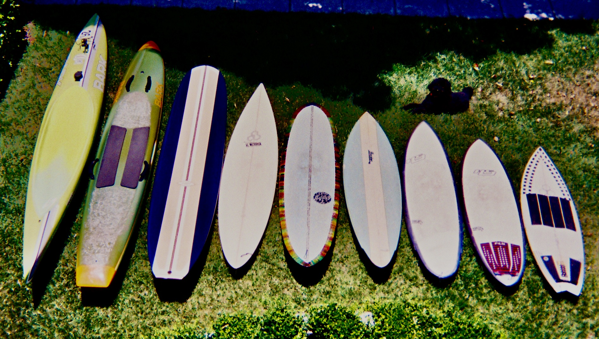
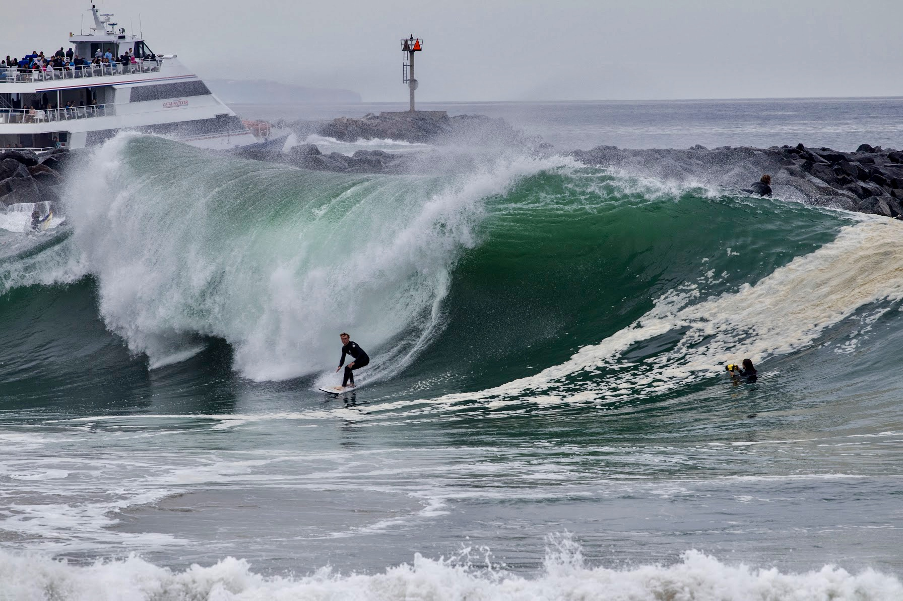
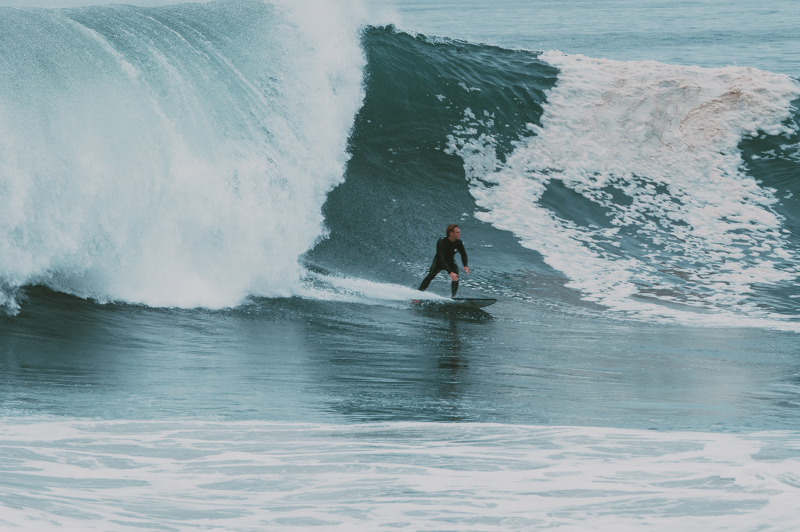
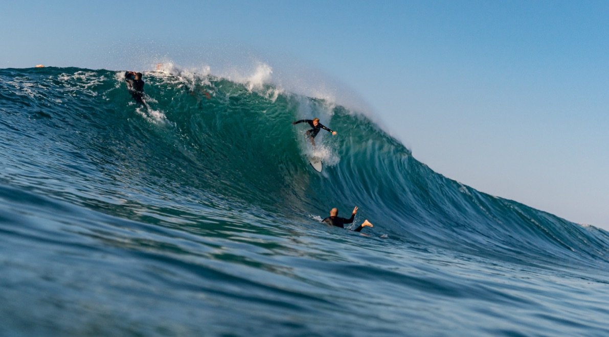
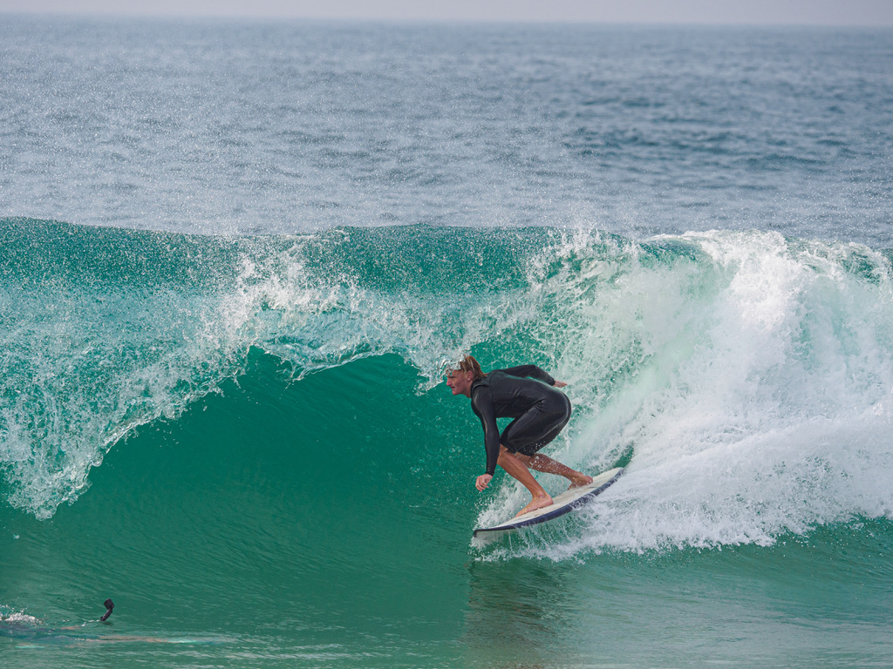
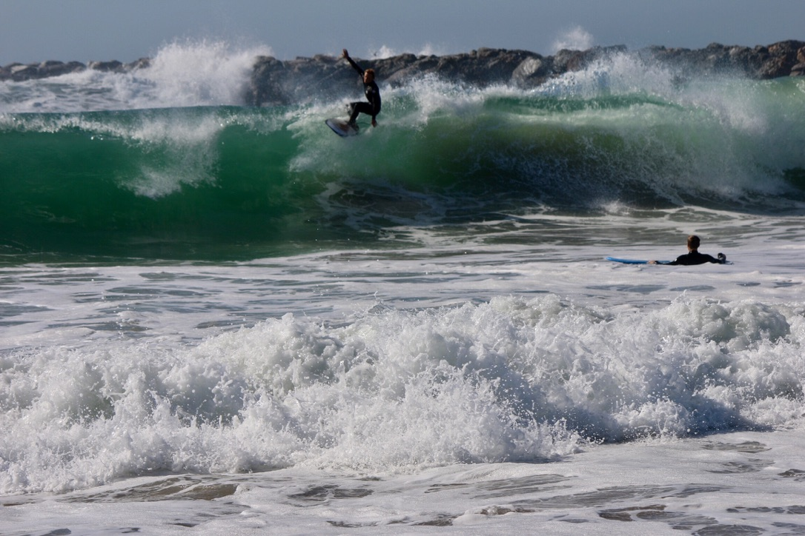

Home | Surfing | Skiing | Paddling | My Resume
Surfing
My Boards

- Short Boards
- 5'6" Al' Merick Neck Beard
- 5'10" Hayden Shapes Hypto Krypto
- 6'2" Hayden Shapes Shred Sled
- Mid Lengths
- 7'0" Becker Single Fin
- 7'6" Al' Merick Semi Gun
- 7'6" Russell Fun Board
- Long Boards
Favorite Spot
The Wedge

The Wedge is a unique wave in Newport Beach famous to California's Coastline. As waves roll in, the jetty creates backwash that is then thrown back into the following wave. When the two waves collide, a "wedge" is formed, doubling the size of the wave. This allows for larger waves to break in shallower waters making this wave very technical and dangerous.
More Photos



